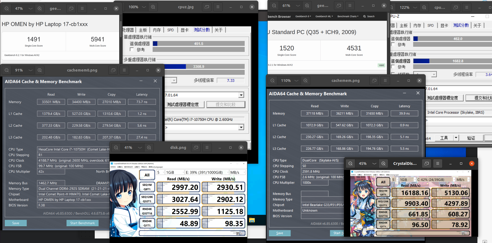

Recent Articles
虚拟机网络配置
虚拟网络结构、功能需按照需求配置，典型例子：
- NAT 模式：为 guests 局域网分配局域网 IP
- Guest -> Internet：使用 NAT 技术依托 host 的网络连接互联网
- Guest <- Internet：需额外在 host 上配置端口转发
- Guest <-> Guest：可访问
- Guest --> Host：可访问
- Guest <-- Host：可访问
- 隔离模式：为 guests 单独搭建一套网络
- Guest -> Internet：无
- Guest <-> Guest：可访问
- Guest 与 Host：无法相互访问
- 共享网卡：相当于使用交换机连接 guest 和 host 的一个网口
- Guest -> Internet：需要 guest 自行通过宽带拨号/DHCP等手段获取 IP
- 网卡直通
- 路由模式
Win on KVM 性能测试

总结：相比原生 Win，Win on KVM
- CPU：
- 单核性能几乎没有损失，有时甚至小胜一筹
- 多核性能：给虚拟机分配 1/3 的核显甚至能获得 2/3 的多核性能
- 内存 & L123 缓存：读写速度有明显损失，但延迟却大幅下降
- 虚拟硬盘：
- VirtIO 虚拟硬盘的多线程随机读写、单线程随机写入性能较差
- 但其他场景下反而优化低端固态硬盘性能
应用推荐
笔者在 Window 系统中使用的应用
命令行管理虚拟机
在宿主机上，除了使用 virt-manager 管理虚拟机，还可使用命令行工具 virsh 及其配套指令管理虚拟机。主要使用指令有：
virsh：强大的虚拟机管理终端virt-install：用于创建虚拟机
小米路由器 AX6S 折腾
在 22 年 7 月我给家里面购买了小米 A6S 路由器。说实话买前只是想着升级到 WiFi 6，看了看测评，因为这款路由器性价比较高就直接下单了。挑选时完全没想到要折腾这么多，对我来说路由器只要本本分分的做好它的本职工作即可，软路由要用到的其他功能我有另一台服务器实现。但官方提供的后台不能配置 IPv6 防火墙，要么就是完全没有防火墙，要么就是阻拦所有入站连接。这二极管思维简直让我如鲠在喉，完全不能发挥国家花大力气推广 IPv6 的成果。所以就有了后续一系列的折腾，主要包括：
- 了解 AX6S
- 启用 telnet、ssh
- 配置 ssh 免密码连接
- 手动配置 IPv6 防火墙
虚拟硬件入门
虚拟机称之为“虚拟”，自然是因为它运行在软件虚拟的硬件上。在 kvm/qemu/libvirt 生态中，大部分硬件由 qemu 模拟，本文从 virt-manager 的 virtual hardware details 页入手，介绍常见虚拟硬件和更高阶的硬件配置方法。
远程管理
在安装有图形桌面的宿主机上使用 virt-manager 管理虚拟机非常方便，但更多时候宿主机被用作服务器，一般不会安装图形界面，而是从其他电脑通过 SSH 等工具远程连接到宿主机并操作，前文提到的管理方法不再适用。
本文的“本地”，指具有用户界面的一台电脑，且这台电脑能够通过 ssh 连接到宿主机。
此时有推荐两种方法：
- 命令行管理：SSH 到宿主机，然后使用
virsh等命令行工具管理虚拟机- 使用范围广：本地无需安装其他软件
- 操作复杂：需要使用一个个命令行指令操作，不如图形界面来得直观
- 适合简单的管理任务，例如启动虚拟机、关闭虚拟机、查询正在运行的虚拟机
- 适合自动化管理：可以编写脚本批量创建、修改虚拟机
- 不适合复杂的管理任务，例如添加一张直通的网卡、添加一些 USB 端口
- virt-manager 远程连接：在本地安装
virt-manager，配置到宿主机的远程连接，实现对宿主机上虚拟机的远程管理- 使用条件稍苛刻：需要在本地安装 virt-manager。但该软件只能装在 linux 系统中，要想在 Windows 系统中安装必须先启用 WSL 2 和 WSLg，再在 WSL2 中安装 virt-manager。但此时远程桌面的性能较差。
- 操作简单：谁不喜欢用户界面的管理方式呢？
- 适合复杂的管理任务：不需要手动编写虚拟机配置文件，图形化操作容易得多
两种方法各有优劣，按具体场景选择合适方法最重要。后文只介绍两种方法的基本使用，不会涉及到特别具体的管理任务，例如给虚拟机添加一张 PCIE 直通的网卡。这些任务的配置方法可参考本站其他文章。
此外，如果只是想用远程桌面连接到虚拟机，可使用 virt-viewer。virt-viewer 是 virt-manager 的一个组件，使用 SPICE 协议连接到虚拟机并在本地打开远程桌面。值得注意的是，virt-viewer 有 Windows 版本，可直接安装，比 virt-manager 方便的多。
QEMU-KVM-libvirt 生态与安装
简单来说：
- QEMU：一个模拟器，可用于模拟操作系统运行所需的各种硬件，包括 CPU、内存、主板、显卡、IO 外设等等设备。QEMU 可单独运行，纯软件模拟各个硬件，但性能会有较大损失。
- KVM：Linux 内核模块，一种硬件虚拟化技术，为 CPU、内存虚拟化提供硬件加速。
- QEMU-KVM：搭配 KVM 的 QEMU 版本，让 KVM 模拟 CPU、内存这类性能设备，减少性能损失。
- libvirt：一套非常流行的管理各类虚拟机的工具和 API，不仅能管理 QEMU-KVM 模拟的虚拟机，还能管理 VirtualBox 等其他虚拟机后端，大致包含：
- virt-manager：具有图形界面的虚拟机管理工具
- virt-viewer：远程桌面客户端，用于和虚拟机进行交互
- virsh：命令行中的虚拟机管理指令